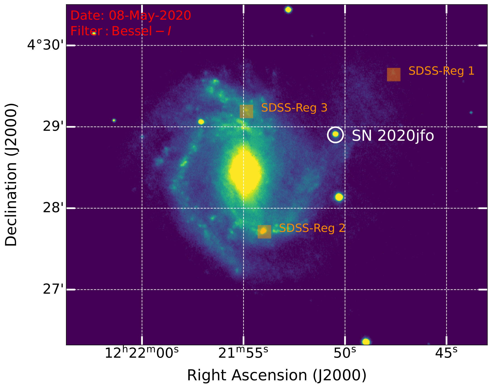
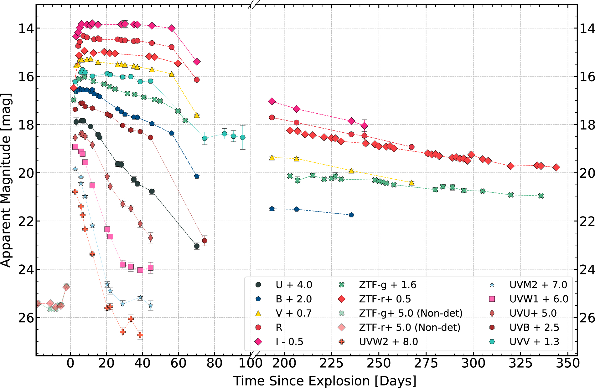
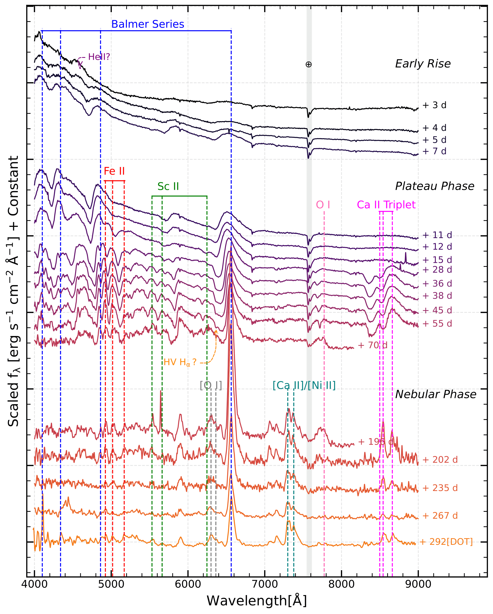
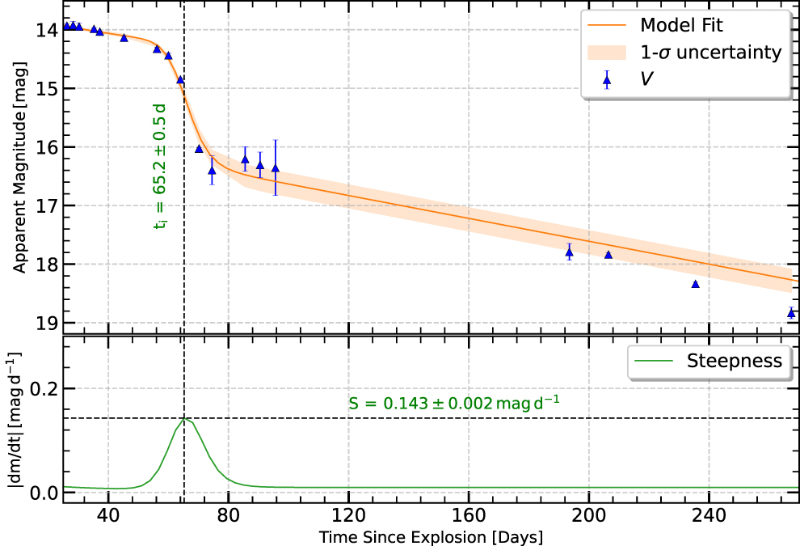
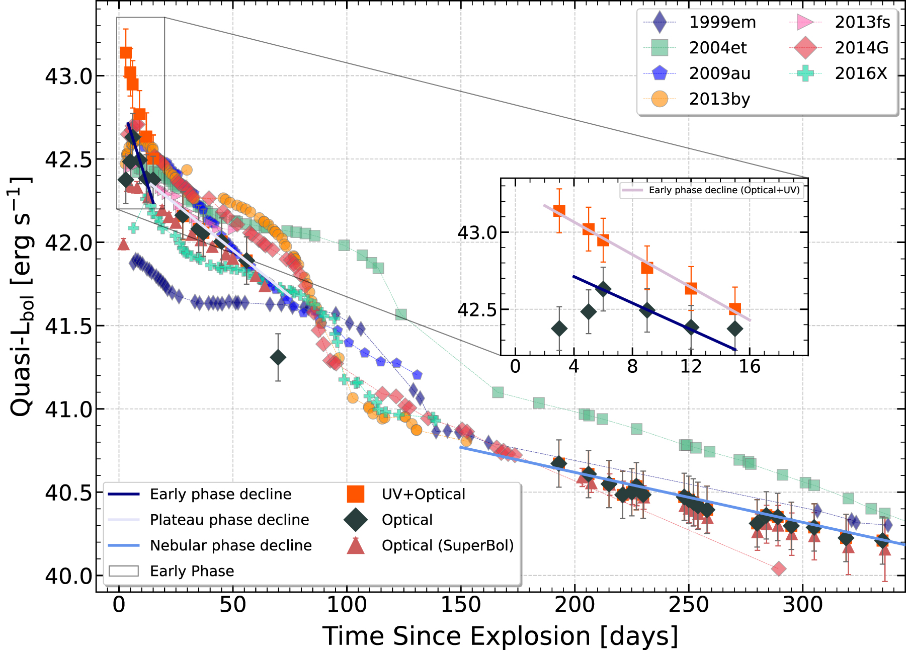
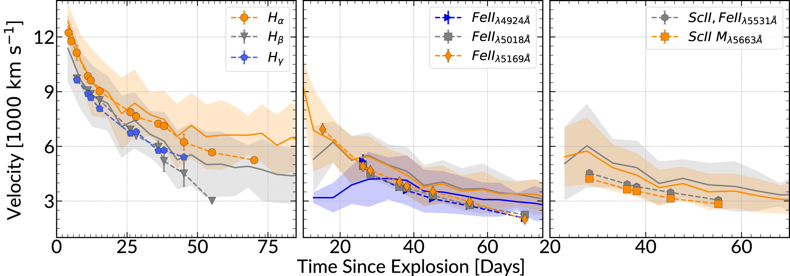
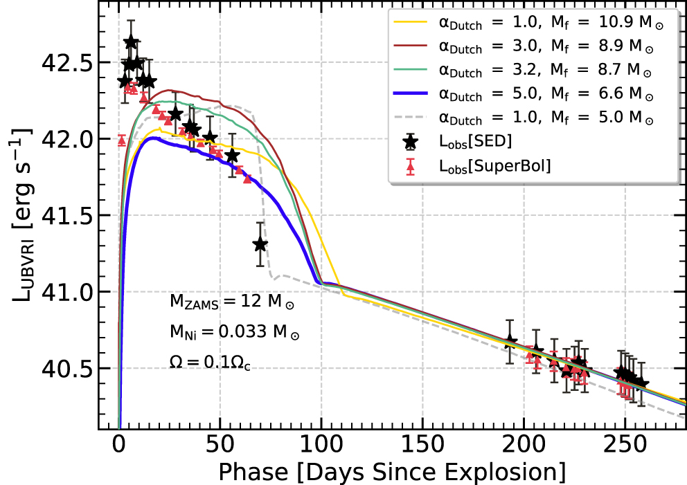
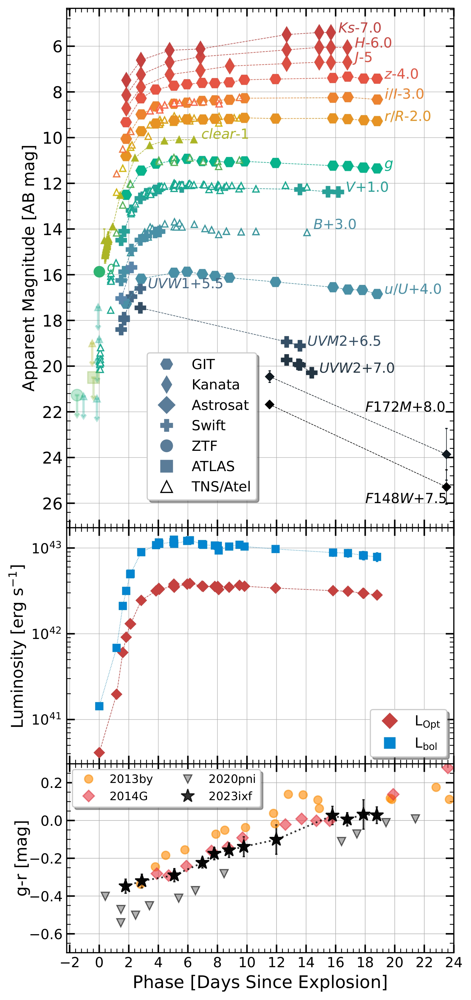
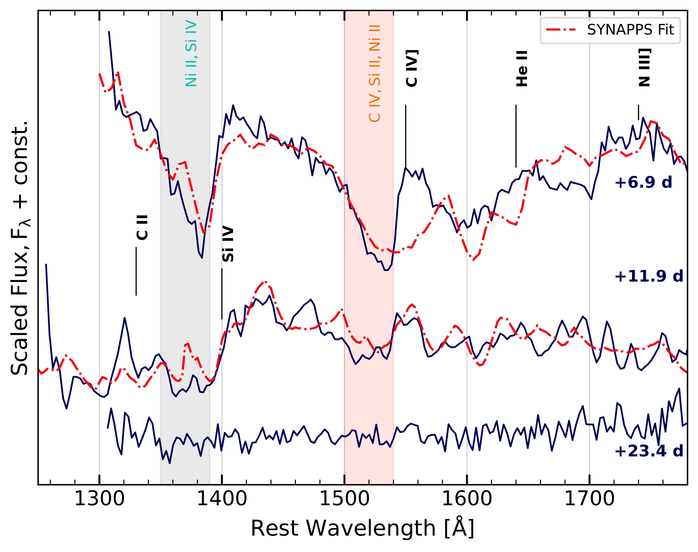
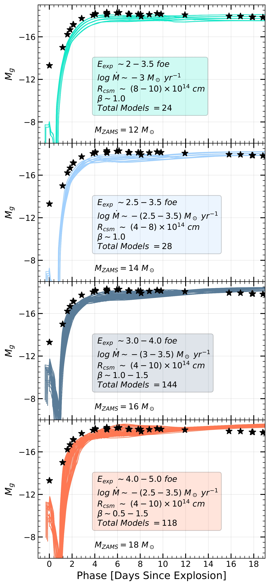

SN 2020jfo: A Short Plateau Type II Supernova from a Low Mass Progenitor

🌄: Pseudo-color image of SN 2020jfo with its host M61 taken from Himalayan Chandra Telescope, IAO, Hanle. (Ref Teja et al 2022 ApJ 930 34 )

🌄:Panchromatic light curves for SN 2020jfo with photometry from HCT, Swift/UVOT, and ZTF. The time period for which SN 2020jfo went behind the Sun has been obliterated from the plot and is marked
by the discontinuity in the abscissa. Offsets in the apparent magnitudes are for visual clarity. (Ref Teja et al 2022 ApJ 930 34 )

🌄: Spectral evolution of SN 2020jfo from 3 days until 292 days post explosion. Lines have been identified following Gutiérrez et al. (2017b), some of the prominent lines are marked. All spectra are
flux calibrated and corrected for reddening and redshift. (Ref Teja et al 2022 ApJ 930 34 )

🌄: Estimated steepness of SN 2020jfo using the functional form from Elmhamdi et al. (2003b). (Ref Teja et al 2022 ApJ 930 34 )

🌄: Quasi-bolometric light curve (Q-bol) of SN 2020jfo along with other Type II SNe. Q-bol with contribution from UV fluxes and from SuperBol (without BB-corrections) are also plotted. Inset shows
Optical and UV+Optical Q-bol during early phase. (Ref Teja et al 2022 ApJ 930 34 )

🌄: Line velocity evolution of Balmer, Fe ii, and Sc ii features obtained using their absorption minima are shown here. A comparison with mean Type II SNe velocities from Gutiérrez et al. (2014) is
also shown. The solid line represents mean value while the shaded region displays the 1-sigma scatter from the mean. (Ref Teja et al 2022 ApJ 930 34 )

🌄: Quasi-bolometric light curves obtained from MESA + STELLA modeling with different values of wsf (1.0, 3.0, 3.2, and 5.0) for the 12 solar mass ZAMS model. Quasi-bolometry of SN 2020jfo is overplotted
for comparison. (Ref Teja et al 2022 ApJ 930 34 )
In this work, we have done a detailed photometric and spectroscopic analyis of a Type II SNe that occurred in M61 galaxy. We have also performed detailed semi-analytical and hydrodynamical modelling to ascertain about it progenitor. This work was published
in The Astrophysical Journal (ApJ). The "Open Access" published file can be accessed from IOP Website. This work can also
be found on arXiv.
Far-ultraviolet to Near-infrared Observations of SN 2023ixf:
A High-energy Explosion Engulfed in Complex Circumstellar Material
🌄: RGB composite image of SN 2023ixf in M101 galaxy taken from Himalayan Chandra Telescope, IAO, Hanle. (Ref Astronomoid's X (Twitter) )

🌄:Multiband photometry is shown along with the data compiled from public sources. The middle panel shows the bolometric light-curve evolution. The bottom panel shows the color evolution of SN 2023ixf
along with the other SNe with observed flash features.. (Ref Teja et al 2023 ApJL 954 L12 )

🌄: UV spectral evolution obtained using Astrosat/UVIT and the SYNAPPS fit to the spectra of ∼7 and ∼12 days. (Ref Teja et al 2023 ApJL 954 L12 )
🌄: Optical spectral evolution for SN 2023ixf from HCT, Perley & Gal-Yam (2023), and Stritzinger et al. (2023). The spectra are corrected for the redshift of the host galaxy, M101, and the epochs
are labeled with respect to our adopted explosion epoch. Top left: early-time spectral sequence of flash features in SN 2023ixf with line identification of high-ionization features and Balmer lines.
The inset depicts the Hα profile at +7.9 days having a broad P Cygni feature and intermediate-width Lorentzian emission. Top right: evolution of the line profile of Hα during the flash phase. Bottom
left: spectral sequence of SN 2023ixf during the photospheric phase. Bottom right: evolution of the multipeaked emission profile of Hα during the photospheric phase. Here HV and PV refer to the high-
and photospheric-velocity components in the blueshifted absorption wing of Hα. (Ref Teja et al 2023 ApJL 954 L12 )

🌄: Best model light curves that could represent the g- band light-curve evolution of SN 2023ixf obtained out of a large sample of >170,000 models presented in Moriya et al. (2023) for different progenitor
masses. (Ref Teja et al 2023 ApJL 954 L12 )
This letter presents detailed multiband observations utilizing both ground and space based observatiories. We covered far-ultraviolet (UV) to near-infrared (NIR) wavelengths, including near-ultraviolet and optical regimes as well, obtaining both photometry
and spectroscopy data in details. We made use of many world class international facilities extensively to obtain data. We tried to understand the early phase evolution (upto 20 days after 💥) in details utilising this rich data
set. We estimated various parameters including explosion energy, circumstellar mass and its distribution, and presented a detailed qualitative analysis of UV spectra. This work was published in The Astrophysical Journal Letters(ApJL).
The "Open Access" published file can be accessed from IOP Website. This work can also be found on arXiv.
A small X (Twitter) thread can be found here.